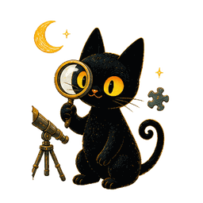
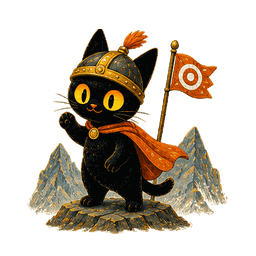

1. Transform：整张图移动/旋转/缩放
适合做呼吸、漂浮、点头、轻微歪头。图片本身没变，只是整个盒子在动。
这三个例子用的是同一张 PNG。左边只改 transform，中间只强调 opacity，右边用 JS 每帧做一个很小的弹簧物理模拟。 你可以把鼠标移到右边舞台里，猫会被目标点拉过去。
适合做呼吸、漂浮、点头、轻微歪头。图片本身没变，只是整个盒子在动。
适合做发光、呼吸光、影子深浅、出现消失。常和 transform 一起用。

适合做跟随、拖拽、弹性回位、气泡碰撞。不是播放固定动画，而是实时计算。

核心区别： transform: CSS 自动补间，改 translate / rotate / scale。 opacity: CSS 自动补间，改透明度，常用于光、影、淡入淡出。 physics: JS requestAnimationFrame，每一帧自己算 x/y/vx/vy，再写回 transform。